import torch
import numpy as np
import pandas as pd
import matplotlib.pyplot as pltAssignment 2
딥러닝의 기초
assignment 2
1. 단순회귀모형 – 풀이생략 (강의노트 참고)
주어진 자료가 아래와 같다고 하자.
torch.manual_seed(7676)
x = torch.randn(100).sort().values
ϵ = torch.randn(100)*0.5
y = 2.5+ 4*x + ϵplt.plot(x,y,'o')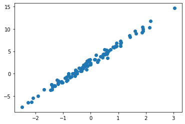
아래와 같은 모형을 가정하고 물음에 답하라.
\[y_i = w_0+w_1 x_i +\epsilon_i, \quad \epsilon_i \overset{iid}{\sim} N(0,\sigma^2)\]
(1) \((\hat{w}_0,\hat{w}_1)=(-5,10)\)으로 선택하고 \(\hat{y}_i\)를 계산하라.
(2) \((\hat{w}_0,\hat{w}_1)=(-5,10)\)에 대한 MSELoss를 계산하라. 즉
\[loss(\hat{w}_0,\hat{w}_1)\]
를 계산하라. 단, \(loss(w_0,w_1)=\frac{1}{n}\sum_{i=1}^{n}(y_i-w_0-w_1x_i)^2\).
(3) \((\hat{w}_0,\hat{w}_1)=(-5,10)\)에서 MSELoss의 미분계수를 구하라. 즉 아래를 계산하라.
\[\frac{\partial}{\partial {\bf W}}loss(w_0,w_1) ~\Bigg|_{~\hat{w}_0,\hat{w}_1}\]
(4) 경사하강법을 이용하여 \((\hat{w}_0, \hat{w}_1)\)의 값을 1회 업데이트하라. (학습률은 \(\alpha=0.1\)로 설정하라)
(5) 이 모형에 대한 적절한 \((\hat{w}_0, \hat{w}_1)\)의 값을 추정하라.
2. 로지스틱모형
주어진 자료가 아래와 같다고 하자.
torch.manual_seed(7676)
x1 = torch.tensor(np.random.randint(low=100,high=199,size=10000))*5
x2 = torch.tensor(np.random.randint(low=150,high=429,size=10000))/100
u = x1*(1/100) + x2*(1.9) - 12.8
v = torch.nn.Sigmoid()(u)
y = torch.bernoulli(v) - x1,x2,y는 각각 토익점수, GPA, 취업성공을 의미하는 변수이다.
fig = plt.figure(figsize=(7,7))
ax = fig.add_subplot(1,1,1,projection='3d')
ax.scatter3D(x1,x2,y,alpha=0.1)<mpl_toolkits.mplot3d.art3d.Path3DCollection at 0x7fd21c731a10>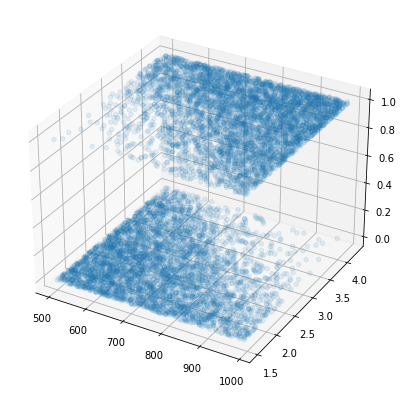
토익과 GPA로 취업여부를 판단하는 적절한 네트워크를 학습하라.
(풀이)
X = torch.stack([x1,x2],axis=1)
y = y.reshape(-1,1) net = torch.nn.Linear(in_features=2,out_features=1)
optimizr = torch.optim.Adam(net.parameters())
loss_fn = torch.nn.BCEWithLogitsLoss()
for epoc in range(10000):
## 1
yhat = net(X)
## 2
loss = loss_fn(yhat,y)
## 3
loss.backward()
## 4
optimizr.step()
optimizr.zero_grad()((yhat>0) == y).float().mean()tensor(0.7890)((v>0.5) == y.reshape(-1)).float().mean() ## true를 알고 있다고 가정하였을 경우 0.7938이 최대예측이므로, 0.79와 비슷할수록 잘 적합된 모형임 tensor(0.7938)3. 과적합과 드랍아웃
주어진 자료가 아래와 같다고 하자.
torch.manual_seed(20)
x=torch.linspace(0,1,200).reshape(200,1)
eps = torch.concat([torch.normal(0,0.1,[60,1]),torch.normal(0,0.075,[60,1]),torch.normal(0,0.05,[80,1])])
y=0.5*x+ epsplt.plot(x,y,'o',alpha=0.5)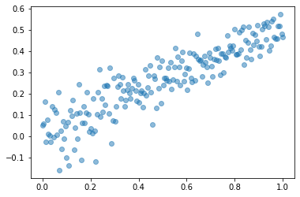
(1) 아래와 같이 자료를 분리하라. - \({\boldsymbol x}=(x_1,\dots,x_{200}) \to {\boldsymbol x}_{train} = (x_1\dots,x_{150}), ~{\boldsymbol x}_{test}=(x_{151},\dots,x_{200})\) - \({\boldsymbol y}=(y_1,\dots,y_{200}) \to {\boldsymbol y}_{train} = (y_1\dots,y_{150}), ~{\boldsymbol y}_{test}=(y_{151},\dots,y_{200})\)
(풀이)
xtr,xtest = x[:150], x[150:]
ytr,ytest = y[:150], y[150:](2) 아래의 코드를 완성하여 네트워크를 설계하고 MSELoss를 손실함수로 선택한 뒤 \(\big( {\boldsymbol x}_{train},{\boldsymbol y}_{train}\big)\)을 사용해 모형을 적합시켜라. (옵티마이저는 자유롭게 선택할 것)
net= torch.nn.Sequential(
torch.nn.Linear(1,4096),
torch.nn.ReLU(),
torch.nn.Linear(???,???)
)(풀이)
torch.manual_seed(43052)
net= torch.nn.Sequential(
torch.nn.Linear(1,4096),
torch.nn.ReLU(),
torch.nn.Linear(4096,1)
)
loss_fn = torch.nn.MSELoss()
optimizr = torch.optim.Adam(net.parameters())for epoc in range(10000):
## 1
## 2
loss = loss_fn(net(xtr),ytr)
## 3
loss.backward()
## 4
optimizr.step()
optimizr.zero_grad()(3) \(net({\boldsymbol x}_{test})\)의 결과를 시각화 하라.
(풀이)
plt.plot(x,y,'o',alpha=0.5)
plt.plot(xtr,net(xtr).data,'--',label='train',lw=5)
plt.plot(xtest,net(xtest).data,'--',label='test',lw=5)
plt.legend() <matplotlib.legend.Legend at 0x7f558cce7dd0>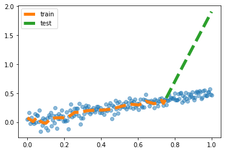
- plt.legend() 등을 사용하지않아도 감점 X
(4) 아래와 같은 Dropout Layer를 (2)의 네트워크 중 적절한 위치에 추가하라. 그리고 다시 \(\big( {\boldsymbol x}_{train},{\boldsymbol y}_{train}\big)\)만을 사용해 모형을 재학습하라.
torch.nn.Dropout(0.5)torch.manual_seed(43052)
net= torch.nn.Sequential(
torch.nn.Linear(1,4096),
torch.nn.ReLU(),
torch.nn.Dropout(0.5),
torch.nn.Linear(4096,1)
)
loss_fn = torch.nn.MSELoss()
optimizr = torch.optim.Adam(net.parameters())for epoc in range(10000):
## 1
## 2
loss = loss_fn(net(xtr),ytr)
## 3
loss.backward()
## 4
optimizr.step()
optimizr.zero_grad()(5) (4)에서 수정한 네트워크에 대한 \(net({\boldsymbol x}_{test})\)의 결과를 시각화 하라.
net.eval()
plt.plot(x,y,'o',alpha=0.5)
plt.plot(xtr,net(xtr).data,'--',label='train',lw=5)
plt.plot(xtest,net(xtest).data,'--',label='test',lw=5)
plt.legend() <matplotlib.legend.Legend at 0x7f558cee5790>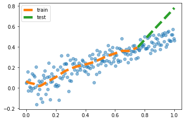
4. Overparameterized Model – (문제수정)
아래와 같은 자료가 있다고 가정하자.
x = torch.rand([1000,1])*2-1
y = 3.14 + 6.28*x + torch.randn([1000,1]) plt.plot(x,y,'o',alpha=0.1)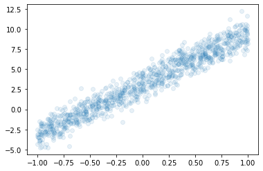
hint: 이 모형은 \(y_i = 3.14 + 6.28 x_i+ \epsilon_i\) 에서 생성 (기존 \(y_i = 6.28 + 3.14 x_i +\epsilon_i\) 에서 수정)
(1) 아래의 모형을 가정하고 \(\beta_0,\beta_1\)을 파이토치를 이용하여 추정하라.
- \(y_i = \beta_0 + \beta_1 x_i + \epsilon_i,\quad \epsilon_i \sim N(0,\sigma^2)\)
(풀이)
net = torch.nn.Linear(1,1)
optimizr = torch.optim.SGD(net.parameters(),lr=0.1)plt.plot(x,y,'o',alpha=0.1)
plt.plot(x,net(x).data,'-')
plt.title(r"$model:= \beta_0+\beta_1x_i$ (before learing)",size=15)Text(0.5, 1.0, '$model:= \\beta_0+\\beta_1x_i$ (before learing)')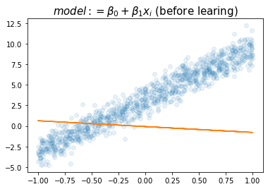
for epoc in range(100):
## 1
yhat = net(x)
## 2
loss = torch.mean((yhat-y)**2)
## 3
loss.backward()
## 4
optimizr.step()
optimizr.zero_grad()plt.plot(x,y,'o',alpha=0.1)
plt.plot(x,net(x).data,'-')
plt.title(r"$model:= \beta_0+\beta_1x_i$ (after 100 epochs)",size=15)Text(0.5, 1.0, '$model:= \\beta_0+\\beta_1x_i$ (after 100 epochs)')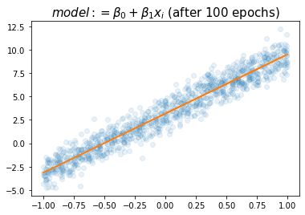
net.weight.data, net.bias.data(tensor([[6.3289]]), tensor([3.1776]))- 참값인 6.24, 3.14 가 적절하게 추정되었음
(2) 아래의 모형을 가정하고 \(\beta_0\)를 파이토치를 이용하여 추정하라.
- \(y_i = \beta_0 + \epsilon_i,\quad \epsilon_i \sim N(0,\sigma^2)\)
(풀이)
w0hat = torch.tensor([0.00],requires_grad=True) plt.plot(x,y,'o',alpha=0.1)
plt.plot(x,(x*0+w0hat).data,'-')
plt.title(r"$model:= \beta_0+0\times x_i$ (before learing)",size=15)Text(0.5, 1.0, '$model:= \\beta_0+0\\times x_i$ (before learing)')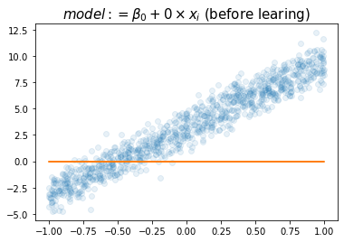
for epoc in range(100):
## 1
yhat = x*0 + w0hat
## 2
loss = torch.mean((yhat-y)**2)
## 3
loss.backward()
## 4
w0hat.data = w0hat.data - 0.1 * w0hat.grad
w0hat.grad = Noneplt.plot(x,y,'o',alpha=0.1)
plt.plot(x,(x*0+w0hat).data,'-')
plt.title(r"$model:= \beta_0+ 0\times x_i$ (after 100 epochs)",size=15)Text(0.5, 1.0, '$model:= \\beta_0+ 0\\times x_i$ (after 100 epochs)')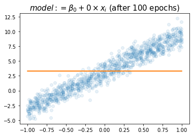
w0hattensor([3.2864], requires_grad=True)- \(w_0\)의 참값인 3.14가 적절하게 추정되었음.
(참고) 위에서 추정된 값은 이론적으로 아래와 같게 됩니다.
y.mean() tensor(3.2864)(3) 아래의 모형을 가정하고 \(\beta_1\)을 파이토치를 이용하여 추정하라.
- \(y_i = \beta_1x_i + \epsilon_i \quad \epsilon_i \sim N(0,\sigma^2)\)
(풀이)
net = torch.nn.Linear(in_features=1,out_features=1,bias=False)
optimizr = torch.optim.SGD(net.parameters(),lr=0.1) plt.plot(x,y,'o',alpha=0.1)
plt.plot(x,net(x).data,'-')
plt.title(r"$model:= \beta_1x_i$ (before learing)",size=15)Text(0.5, 1.0, '$model:= \\beta_1x_i$ (before learing)')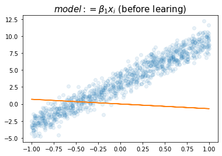
for epoc in range(100):
## 1
yhat = net(x)
## 2
loss = torch.mean((y-yhat)**2)
## 3
loss.backward()
## 4
optimizr.step()
optimizr.zero_grad() plt.plot(x,y,'o',alpha=0.05)
plt.plot(x,net(x).data,'--')
plt.title(r"$model:= \beta_1x_i$ (after 100 epochs)",size=15)Text(0.5, 1.0, '$model:= \\beta_1x_i$ (after 100 epochs)')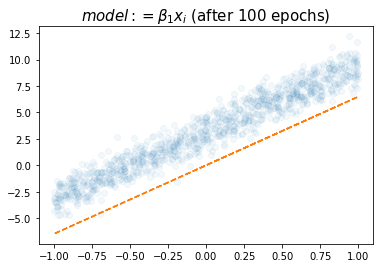
net.weightParameter containing:
tensor([[6.4900]], requires_grad=True)- 참값인 6.28과 비슷하다.
(4) 아래의 모형을 가정하고 \(\alpha_0,\beta_0,\beta_1\)을 파이토치를 이용하여 추정하라.
- \(y_i = \alpha_0+\beta_0+ \beta_1x_i + \epsilon_i \quad \epsilon_i \sim N(0,\sigma^2)\)
\(\hat{\alpha}_0+\hat{\beta}_0\)은 얼마인가? 이 값과 문제 (1)에서 추정된 \(\hat{\beta_0}\)의 값과 비교하여 보라.
(풀이)
_1 = torch.ones([1000,1])
X = torch.concat([_1,x],axis=1)net = torch.nn.Linear(in_features=2,out_features=1)
optimizr = torch.optim.SGD(net.parameters(),lr=0.1) plt.plot(x,y,'o',alpha=0.1)
plt.plot(x,net(X).data,'-')
plt.title(r"$model:= (\beta_0+\alpha_0)+ \beta_1x_i$ (before learing)",size=15)Text(0.5, 1.0, '$model:= (\\beta_0+\\alpha_0)+ \\beta_1x_i$ (before learing)')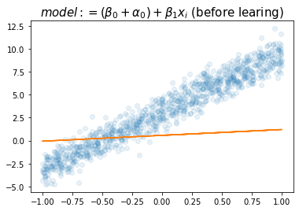
for epoc in range(100):
## 1
yhat = net(X)
## 2
loss = torch.mean((y-yhat)**2)
## 3
loss.backward()
## 4
optimizr.step()
optimizr.zero_grad() plt.plot(x,y,'o',alpha=0.05)
plt.plot(x,net(X).data,'--')
plt.title(r"$model:= (\beta_0+\alpha_0)+ \beta_1x_i$ (after 100 epochs)",size=15)Text(0.5, 1.0, '$model:= (\\beta_0+\\alpha_0)+ \\beta_1x_i$ (after 100 epochs)')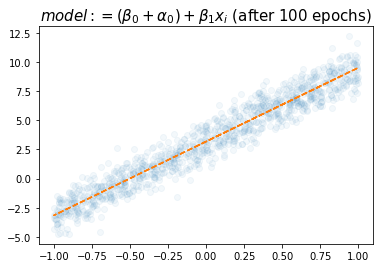
net.bias,net.weight(Parameter containing:
tensor([2.0016], requires_grad=True),
Parameter containing:
tensor([[1.1759, 6.3301]], requires_grad=True))2.0016 + 1.17593.1774999999999998- 2.0016 (\(\alpha_0\)의 추정치로 해석가능) 와 1.1759 (\(\beta_0\)의 추정치로 해석가능) 의 합이 (1)에서 추정된 값과 비슷하다.
- 6.3301 (\(\beta_1\)의 추정치로 해석가능) 역시 (1)에서 추정된 값과 비슷하다.
(5) 아래의 모형을 가정하고 \(\alpha_0,\alpha_1,\beta_0,\beta_1\)을 파이토치를 이용하여 추정하라. – 이거 제가 힌트를 잘못줬어요.. 문제가 좀 어렵게나왔네요 ㅠㅠ
- \(y_i = \alpha_0+\beta_0+ \beta_1x_i + \alpha_1x_i + \epsilon_i \quad \epsilon_i \sim N(0,\sigma^2)\)
\(\hat{\alpha}_0+\hat{\beta}_0\), \(\hat{\alpha}_1 + \hat{\beta}_1\)의 값은 각각 얼마인가? 이 값들을 (1) 에서 추정된 \(\hat{\beta}_0\), \(\hat{\beta}_1\) 값들과 비교하라.
(풀이)
X = torch.concat([_1,_1,x,x],axis=1)
Xtensor([[ 1.0000, 1.0000, 0.8959, 0.8959],
[ 1.0000, 1.0000, -0.4144, -0.4144],
[ 1.0000, 1.0000, -0.1736, -0.1736],
...,
[ 1.0000, 1.0000, -0.8677, -0.8677],
[ 1.0000, 1.0000, 0.2317, 0.2317],
[ 1.0000, 1.0000, -0.0644, -0.0644]])net = torch.nn.Linear(in_features=4,out_features=1,bias=False)
optimizr = torch.optim.SGD(net.parameters(),lr=0.1) plt.plot(x,y,'o',alpha=0.1)
plt.plot(x,net(X).data,'-')
plt.title(r"$model:= (\beta_0+\alpha_0)+ (\beta_1+\alpha_1)x_i$ (before learing)",size=15)Text(0.5, 1.0, '$model:= (\\beta_0+\\alpha_0)+ (\\beta_1+\\alpha_1)x_i$ (before learing)')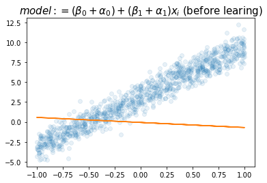
for epoc in range(100):
## 1
yhat = net(X)
## 2
loss = torch.mean((y-yhat)**2)
## 3
loss.backward()
## 4
optimizr.step()
optimizr.zero_grad() plt.plot(x,y,'o',alpha=0.1)
plt.plot(x,net(X).data,'-')
plt.title(r"$model:= (\beta_0+\alpha_0)+ (\beta_1+\alpha_1)x_i$ (after 100 epochs)",size=15)Text(0.5, 1.0, '$model:= (\\beta_0+\\alpha_0)+ (\\beta_1+\\alpha_1)x_i$ (after 100 epochs)')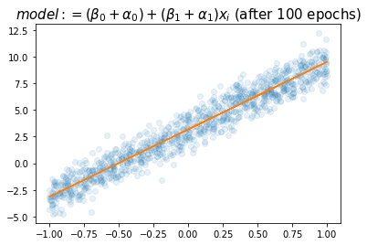
net.weightParameter containing:
tensor([[1.2784, 1.8990, 3.2781, 3.0571]], requires_grad=True)[1.2784+1.8990, 3.2781+3.0571][3.1774, 6.3352]- \(\hat{\alpha}_0+\hat{\beta}_0=3.1774\), \(\hat{\alpha}_1+\hat{\beta}_1=6.3352\)
(6) 다음은 위의 모형에 대하여 학생들이 discussion한 결과이다. 올바르게 해석한 학생을 모두 골라라.
민정: \((x_i,y_i)\)의 산점도는 직선모양이고 직선의 절펴과 기울기 모두 유의미해 보이므로 \(y_i = \beta_0 + \beta_1 x_i\) 꼴을 적합하는게 좋겠다.
슬기: 나도 그렇게 생각해. 그래서 (2)-(3)과 같이 기울기를 제외하고 적합하거나 절편을 제외하고 적합하면 underfitting의 상황에 빠질 수 있어.
성재: (2)의 경우 사실상 \(\bar{y}=\frac{1}{n}\sum_{i=1}^{n}y_i\)를 추정하는 것과 같아지게 되지.
세민: (4)의 경우 \({\bf X}=\begin{bmatrix} 1 & x_1 \\ 1 & x_2 \\ \dots & \dots \\ 1 & x_n \end{bmatrix}\) 와 같이 설정하고 네트워크를 아래와 같이 설정할 경우 얻어지는 모형이야.
net = torch.nn.Linear(in_features=2,out_features=1,bias=True)구환: 모델 (4)-(5)는 표현력은 (1)과 동일하지만 추정할 파라메터는 (1)보다 많으므로 효율적인 모델이라고 볼 수 없어.
(풀이)
모두 맞게 서술함
아래는 이 문제에 대한 몇 가지 해설입니다.
under fitting
(2)-(3)은 각각 원래직선의 기울기와 절편을 설명할 수 없는 구조이므로 모형의 표현력이 약한 상황이다. 따라서 underfitting 이 된다.
overparameterized model
(4)-(5)는 (1)에 대비하여 학습할 파라메터는 상승하였으나 모형의 표현력은 (1)과 동일한 상황이다. 실제로 직선의 적합을 만들기 위해서는 기울기를 의미하는 파라메터와 절편을 의미하는 파라메터 2개로 충분하다. 하지만 (4)의 경우 절편을 표현함에 있어서 \(\alpha_0, \beta_0\) 두 개의 파라메터를 썼으므로 파라메터의 낭비가 있다고 볼 수 있다. (5)의 경우 절편의 표현에서 파라메터의 낭비가 있었고 또한 기울기의 표현에서도 \(\alpha_1,\beta_1\) 두 개의 파라메터를 사용하였으므로 낭비가 있다.
전통적인 통계학에서는 이처럼 잘못계획된 모형이 파라메터를 추정할때 큰 방해요소이지만 경사하강법을 base로 학습하는 경우 크게 문제되지 않는다. (\(\hat{\alpha}_0+\hat{\beta}_0\)이 절편의 추정값 역할을, \(\hat{\alpha}_1+\hat{\beta}_1\)이 기울기의 추정값 역할을 한다.) 여기에서 “왜 pytorch나 tensorflow에서 구현되는 경사하강법 based method 에서는 문제가 되지 않는가?” 에 대한 질문에 답을 하기 위해서는 기계학습 혹은 회귀분석에서 다루는 능형회귀(ridge)를 이해해야 한다. 이 부분은 본 교과과정 범위 밖이라 생각하므로 자세한 서술은 생략한다. (궁금하면 메일로 물어보세요, 단 ridge를 이해한 상태에서 물어보셔야합니다)
overfiting
단순히 파라메터를 많이 쓴다고 오버피팅이 되는건 아니다. 파라메터를 많이써서 모형의 표현력이 올라가야 오버피팅의 가능성이 있다. (4)-(5)의 경우 파라메터를 많이 썼으나 모형의 표현력이 상승한 것은 아니므로 오버피팅상황은 아니다.
(2)에서 절편만 정확하게 학습되는 이유
결국 \(loss=\frac{1}{n}\sum_{i=1}^{n}(y_i-\hat{y}_i)^2=\frac{1}{n}\sum_{i=1}^{n}(y_i-w_0)^2\) 와 같은 형태이다.
경사하강법은 loss가 최소화되는 \(w_0\)를 찾아주는 방법인데, 경사하강법을 이용하지 않고 이론적으로 해결한다면 \(\frac{\partial}{\partial w_0}loss=0\)을 계산하여 풀면 된다.
\(\frac{\partial}{\partial w_0}loss=0 \Longleftrightarrow \frac{1}{n}\sum_{i=1}^{n}(-2)(y_i-w_0)=0\) 이고
\(\frac{1}{n}\sum_{i=1}^{n}(-2)(y_i-w_0)\)를 \(w_0\)에 대하여 정리하면 \(\hat{w}_0=\frac{1}{n}\sum_{i=1}^{n}y_i\) 이 된다.
5. 다음을 읽고 참 거짓을 판단하여라.
(1) 로지스틱 모형은 Adam 옵티마이저가 아닐 경우 적합시키는 것이 불가능하다. (거짓)